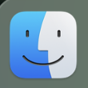
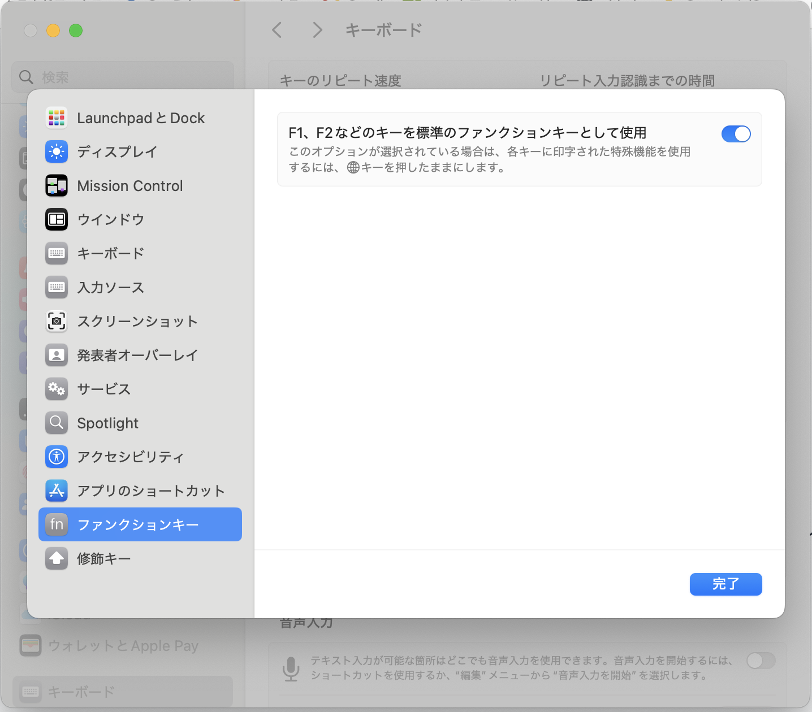

購入理由
今回色々プログラミングなど、趣味で勉強したくてPCを購入しました。今まで仕事でもWindowsでしたが、今回は初めてのMacです。
なぜMacにしたのか、理由はこんな感じです。
- 友人にプログラミングの際何を使っているか聞いたらMacだったから
- iOSアプリの開発やってみたかったから
- 使ってみたかったから
- かっこいいから
購入したもの
購入したのは13インチMacBook Airです。スペックは以下です。
- 10コアCPU
- 8コアGPU
- 16GBユニファイドメモリ
- 256GB SSDストレージ
- M4チップ
開発するにあたって、最低限のスペックという感じです。必要になった時はもう少しいいものを買おうと思います。
更に、今回購入したものは整備済品です。
整備済品とは？
Appleの整備済み製品とは、返品された製品や展示品をAppleが公式に再整備し、新品同様の品質にまで回復させた製品です。新品よりも最大15%割引され、バッテリー・外装交換、新しい付属品、1年間の保証も付帯。品質・保証面で安心できるのがメリットです。

Apple 2025 MacBook Air M4 チップ搭載 13インチノートブック
Apple Intelligence対応。13.6インチ Liquid Retina ディスプレイ、16GBユニファイドメモリ、256GB SSD、12MPカメラ、Touch ID搭載。
使ってみた感想
実際に使ってみた感想としては、「Windowsと違いすぎて分からん」でした。
まずはキーボードですね。主に今まで使っていたCtrl・Shift・半角/全角がどこ押せばいいの？という感じです。
良かったところ
- トラックパッドが非常に使いやすく、マウスが不要
- iPhoneとのAirDropで画像共有がスムーズ
- スリープ中にバッテリー消費が少ない、起動が早い
Windowsと違う点（よく使うショートカットなど）
スクリーンショット
- command+Shift+3 → 画面全体
- command+Shift+4 → 範囲選択
Delキー
fn + backspace
Finder
Windowsでいうドキュメント。ファイルはここに保存される。
ファンクションキー
設定 ＞ キーボード ＞ ショートカット ＞ ファンクションキーで、F1,F2などを標準のファンクションキーとして使用。
Windows同様にF7でカタカナ変換を使えるようにしました。

ざっとこんな感想を抱いています。次回はプログラミングの開発環境についてでも書きます。